Version 2.0 · A comprehensive step-by-step guide for navigating and using the platform.
Welcome! This guide walks you through the Lanai Lifestyle platform, one screen at a time, in simple everyday language. By the end you will be able to navigate the entire application, use every service, and understand what the AI is doing for you without needing to call anyone for help.
Lanai is a luxury travel concierge that lives on your computer. It helps a travel team run their business and helps members (the travellers) see and manage their trips in one place.
There are two areas, like two doors into the same building:
| Area | Who uses it | What it's for |
|---|---|---|
| Advisor Portal | The Lanai team | Run the business: clients, trips, proposals, AI assistance, invoices |
| Member Portal | The travellers (members) | See your trips, documents, proposals, and message your advisor |
The platform has an AI assistant built in. It helps write proposals, prepare daily briefings, understand clients, and draft replies to messages. Think of it as a fast assistant that drafts content for you to review before sending.
https://lanai.newfire.app)./client).The left-hand menu is your map. Click any item to move between screens. Below is every screen, what it's for, and how to use it.
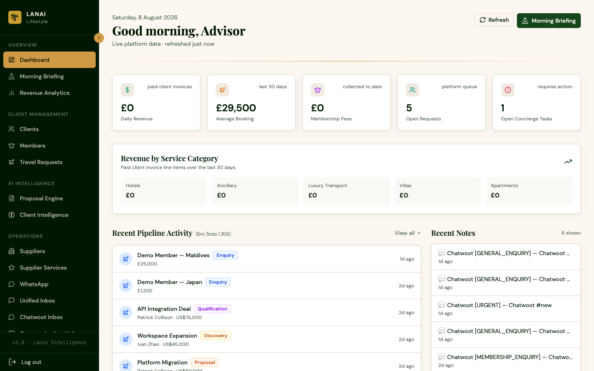
This is your at-a-glance overview. It shows live numbers pulled from your records: Total clients, Open travel requests, Active members, and Pipeline value.
How to use it: Start here every day. It tells you what needs attention at a glance.
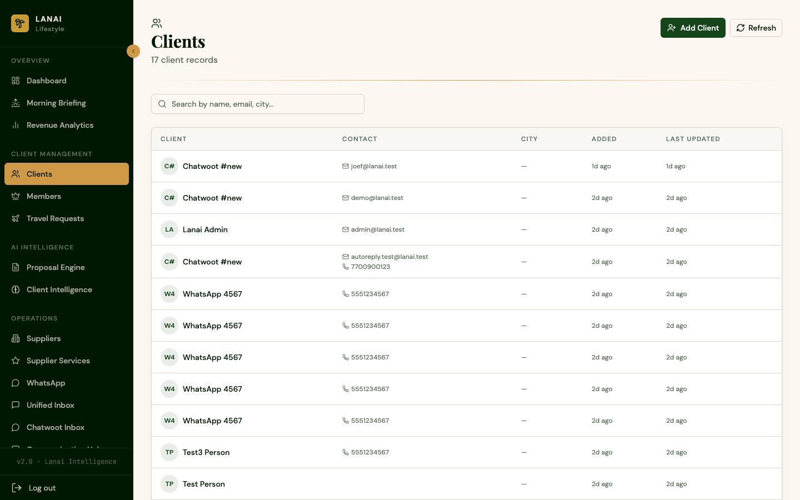
A searchable list of every client.
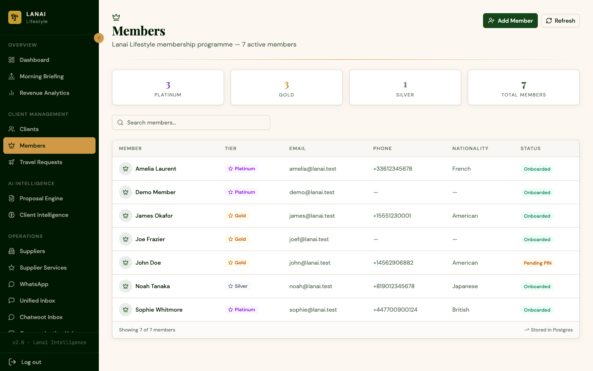
Your active membership base. Each member has a tier (Platinum, Gold, Silver) and status.
How to use it: See who your members are, their tier, and their details. Click into a member to see their profile and history.
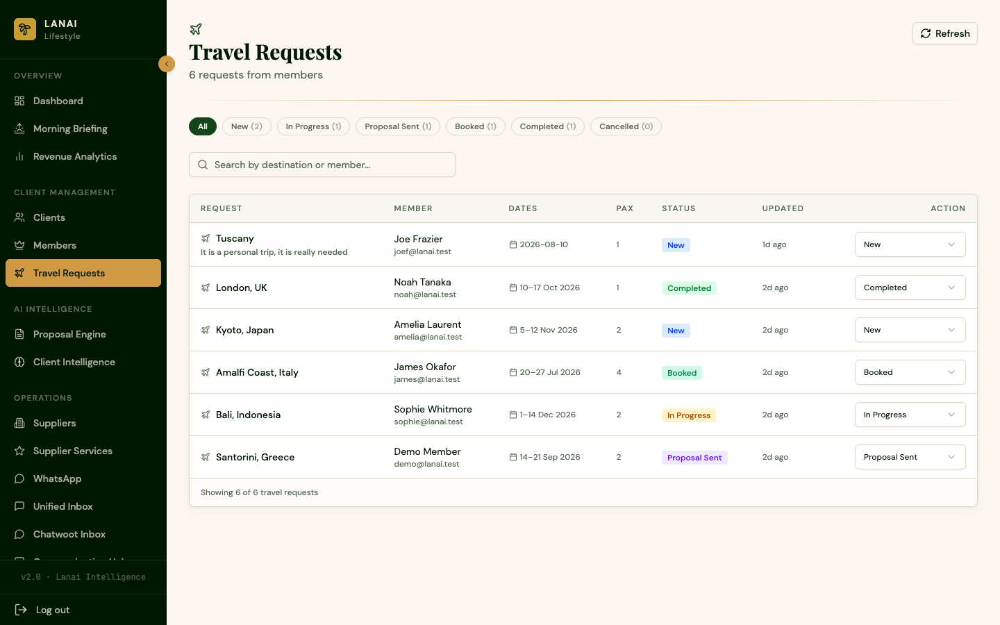
Every trip a client has asked for, from first request to completed booking.
What the stages mean: New (just asked) → In Progress (being worked on) → Proposal Sent (you've sent them options) → Booked (confirmed) → Completed (trip done) → Cancelled.
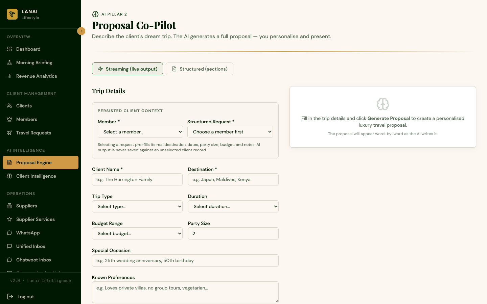
The AI proposal generator. Instead of writing a trip proposal from scratch, the AI drafts it for you.
A note on AI: Generation can take a minute or two. The AI only uses the facts you give it and clearly labels any assumptions. It never invents confirmed prices or availability.
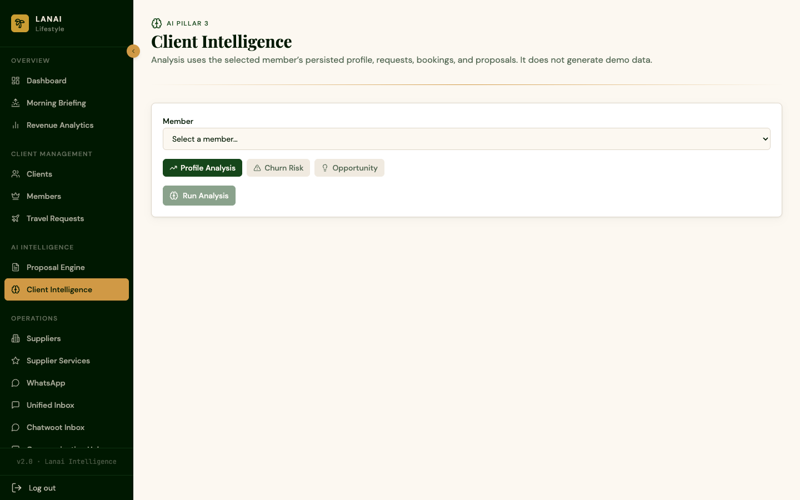
A per-member client intelligence view. Pick a member and the AI looks at their profile to surface a summary of their travel history and preferences, open opportunities, and risks or gaps.
How to use it: Select a member, then read the AI's summary to get up to speed before you speak with them.
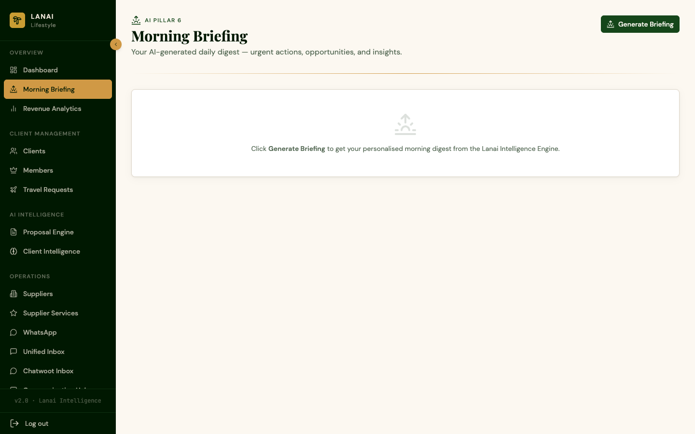
Generates a daily briefing with a digest of the day's clients, follow-ups, and priorities.
How to use it: Click Generate Briefing. The AI pulls together what matters for the day so you know where to focus. (This can take a minute or two.)
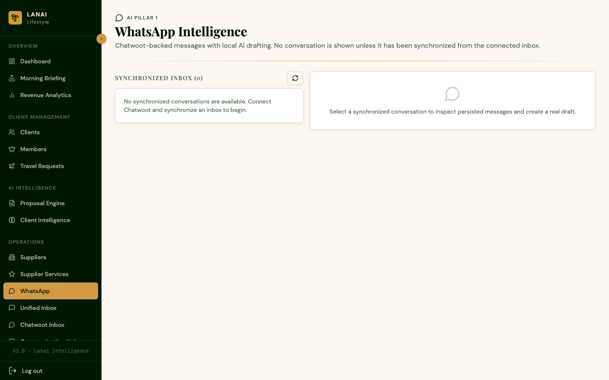
When a client messages you on WhatsApp, the platform recognises the contact, runs AI triage (intent, urgency, mood), drafts a reply for you to review and send, and logs a note and task against the client automatically.
How to use it: Open a message, review the AI's suggested reply, edit if you like, and send.
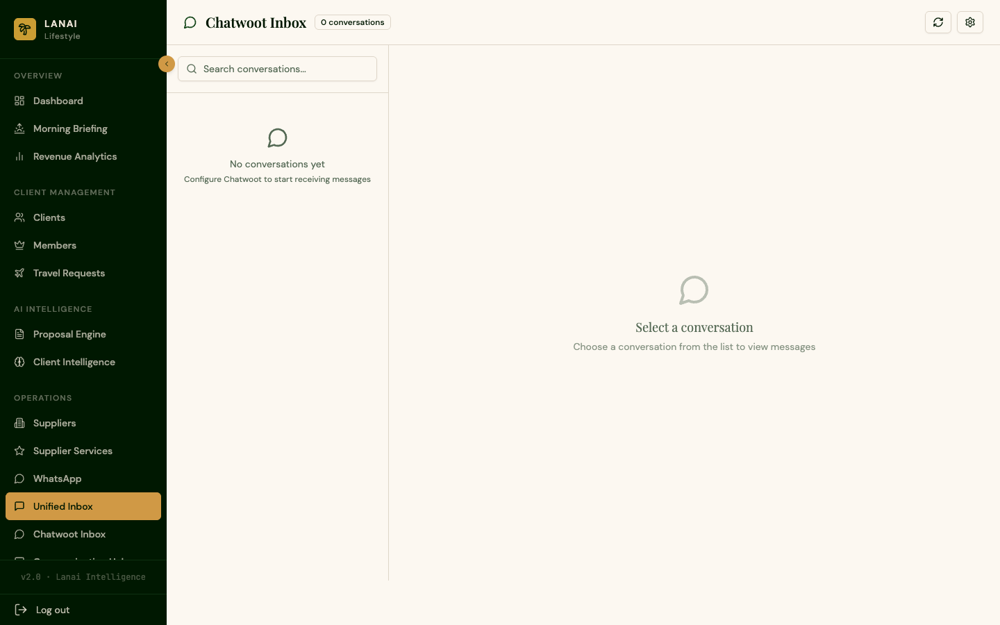
Your unified messaging inbox (powered by Chatwoot). All client conversations across WhatsApp, email, and portal messages in one place.
24/7 AI auto-reply: When a member sends a message through the portal, the platform replies automatically around the clock so no message ever goes unanswered, even outside working hours. Your manual replies always take priority, and the system never replies to its own messages.
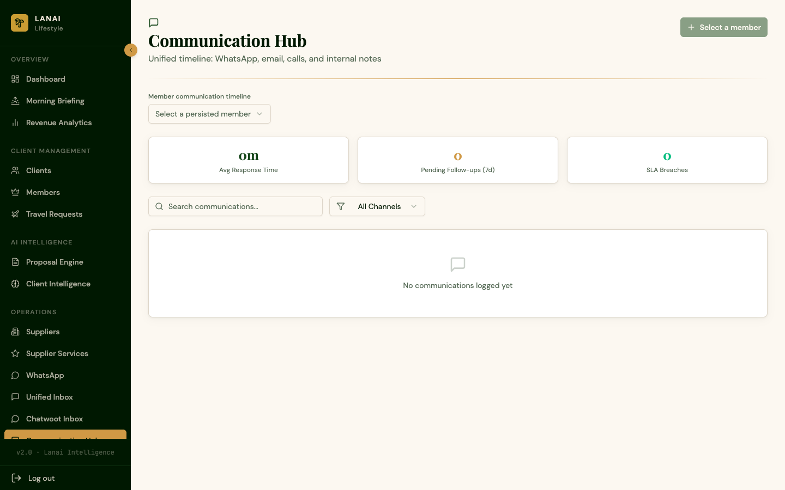
A unified view of a client's communications and activity to see the full picture of your relationship at a glance.
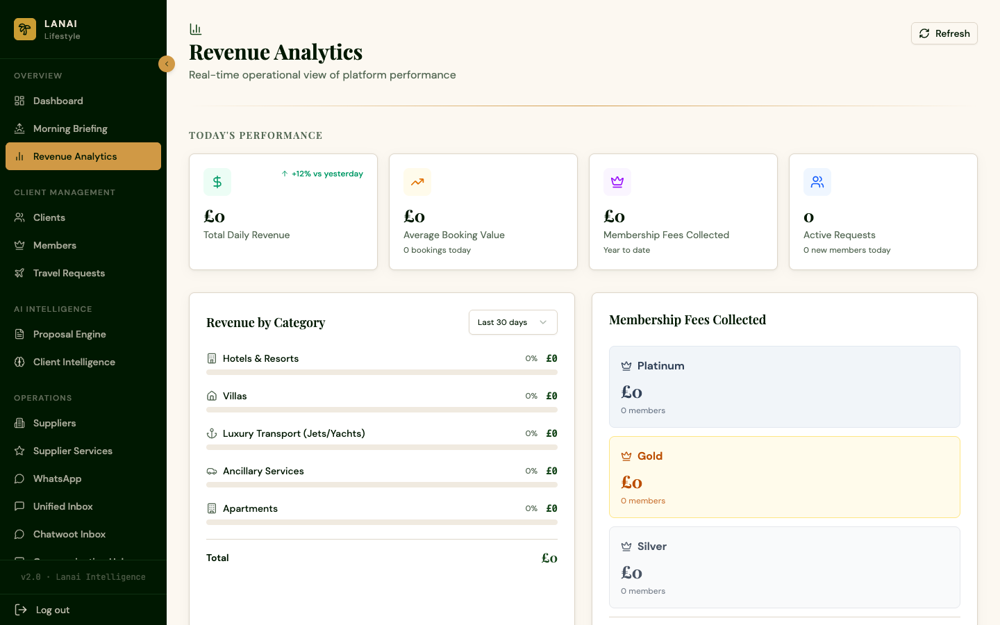
Revenue analytics showing income, commissions, and pipeline value to track business performance.
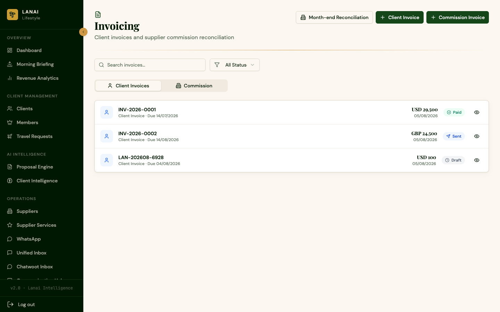
Create and manage client invoices and supplier commission invoices.
How to use it: Create an invoice and track its status (Draft, Sent, Paid, or Overdue) along with due dates.
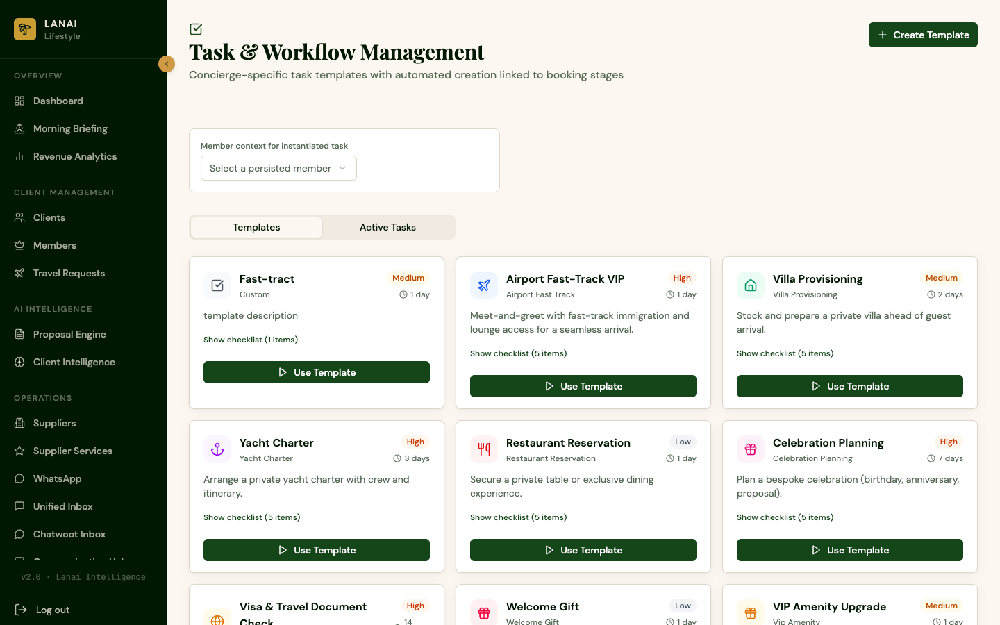
Pre-made templates for common tasks and workflows so you do not have to start from scratch each time.
How to use it: Pick a template, and it fills in the standard steps for you to adjust and use.
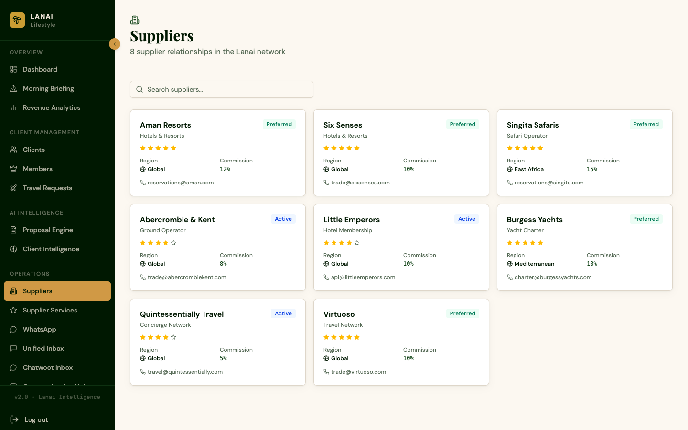
Your vetted supplier network covering hotels, villas, yachts, jets, transfers, and experiences.
How to use it: Browse suppliers, see their category, location, rating, preferred status, and contact details.
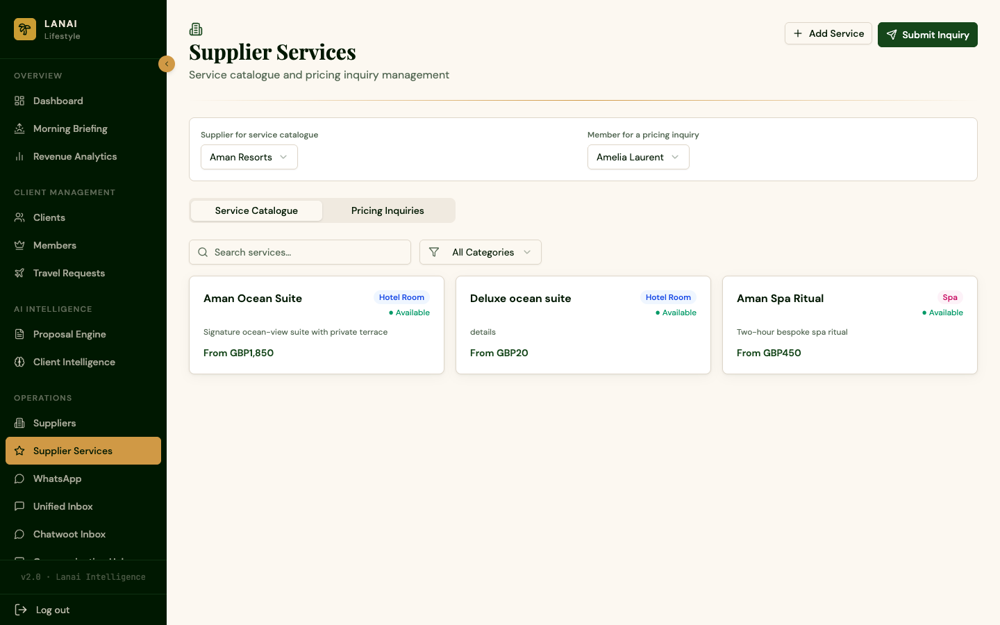
The services each supplier provides (rooms, dining, experiences, and more).
How to use it: Add a service to a supplier, or submit an inquiry for a service you need for a client.
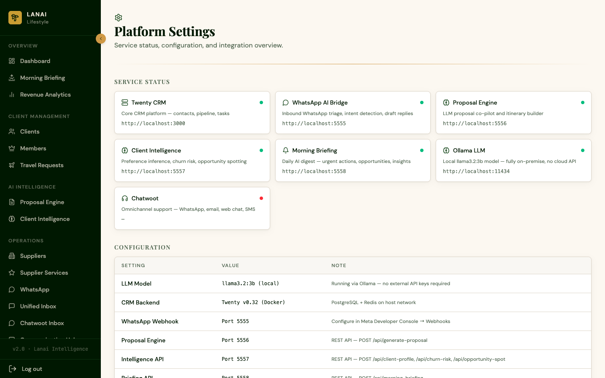
Your account and platform settings covering profile details, preferences, and system configuration.
The platform uses a local AI assistant to help you work faster. Here are the plain-English guidelines:
The Member Portal is your private space to manage your travel with Lanai.
Your personal overview showing your active and upcoming trips, their status, and quick access to your documents and proposals.
View the proposals your advisor prepared for you, including accommodation, itinerary, experiences, and investment, in a clean, client-ready format. You can review and respond.
Access your travel documents (itineraries, confirmations, and vouchers) in one secure place.
View your invoices and payment status for your trips.
Manage your personal preferences, such as favourite destinations, cabin class, room type, and dietary needs, so your advisor can tailor everything to you.
Chat securely with your advisor through the portal. You will receive an instant reply around the clock because the AI concierge acknowledges your message right away and routes it to your advisor, ensuring you are never left waiting.
| Service | Where | What it does |
|---|---|---|
| Live CRM | Advisor Portal | Every client and contact in one place |
| AI Proposals | Advisor Portal | Drafts complete client proposals in minutes |
| AI Intelligence | Advisor Portal | Analyses each client for opportunities & risks |
| AI Morning Briefing | Advisor Portal | Daily digest of priorities and follow-ups |
| WhatsApp AI | Advisor Portal | Triage + draft replies for WhatsApp messages |
| Unified Inbox | Advisor Portal | All client conversations in one place |
| 24/7 AI Auto-Reply | Both portals | Instant AI replies to member messages, day or night |
| Supplier Network | Advisor Portal | Vetted hotels, yachts, jets, transfers & experiences |
| Invoicing | Advisor Portal | Client & commission invoices |
| Analytics | Advisor Portal | Revenue and pipeline at a glance |
| Client Portal | Members | Trips, documents, proposals, billing & preferences |
Q: I received a "Too many requests" message. What should I do?
A: This is a temporary safeguard. Wait a few minutes and try again.
Q: How long does an AI proposal take?
A: Usually 1–2 minutes. The platform shows you when it is ready.
Q: Can a client see my internal notes?
A: No. The client portal only shows what you choose to share (proposals, documents, trips, billing).
Q: Where do WhatsApp messages appear?
A: In the Inbox and the WhatsApp page, with an AI-drafted reply ready for you.
Q: Will members always get a reply?
A: Yes. The 24/7 AI concierge replies to every member message automatically, providing a personalised reply when available or a warm acknowledgment otherwise.
Q: I cannot log in to the client portal.
A: Check your email and PIN. If you have forgotten your PIN, contact your advisor to resend an invitation.